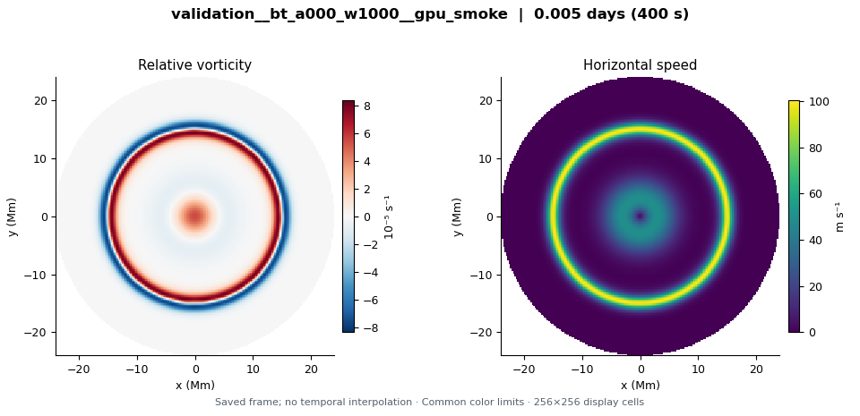

validation__bt_a000_w1000__gpu_smoke
LD ∞ Mm · Whole upper base × 0 (jet + cyclone) · 0.0046296 model days
Explore this run →Three 400-second CPU/GPU checks on a 256² grid. The barotropic, half-matched and fully matched cases all passed. These short runs verify implementation; they do not test hexagon persistence or spatial convergence.
These are short software-validation runs. CPU/GPU agreement does not establish hexagon persistence, spatial convergence, or physical stability. The nearly unchanged flow over this interval is not a stabilization result.

LD ∞ Mm · Whole upper base × 0 (jet + cyclone) · 0.0046296 model days
Explore this run →LD 3.2 Mm · Whole upper base × 0.5 (jet + cyclone) · 0.0046296 model days
Explore this run →LD 0.5 Mm · Whole upper base × 1 (jet + cyclone) · 0.0046296 model days
Explore this run →